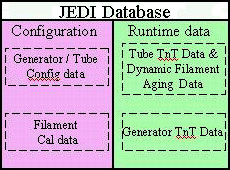

Operating Documentation
Direction 5193574-800, Rev# 22
LightSpeed 7.X Service Methods
Module Version 3.0, Version Date 4/21/09
Operating Documentation |
| Last Revised: | February 19, 2009 |
The generator firmware runs on the kV control board's Power PC CPU. Its main functions are:
Console and/or system communication
Exposure sequencing (rotation, heater, exposure control, mA regulation, and focal spot deflection control)
Tube calibrations
Tube/generator tracking
Generator diagnostics (application background diagnostics and service diagnostics)
The generator communicates via a Controlled Area Network (CAN). Each communication path is connected to the application software through a communication driver. This mechanism allows:
The same generator behavior regardless the communication path used to drive the generator (other types of X-Ray systems use CAN in conjunction with other types of communication)
Connecting several interfaces at the same time on the generator
For a detailed discussion of exposure sequencing please refer to X-Ray Generation Theory.
The generator firmware counts the number of tube spits occurring during an exposure.
The count generates an error if:
The number of tube spits exceeds the maximum number allowed for CT applications this is 32 spits per second
Tube spit rate exceeds the maximum allowed. For CT applications this is 20 spits/0.1s.
In both cases, the exposure is stopped and the error is reported to the system.
If the count does not exceed the limits, the number of spits is reported to the system at the end of the exposure. A cumulative count of tube spits is stored in the TnT database, or can be viewed using the Real-Time Stats viewer.
Tube filaments age during tube life leading to mA inaccuracy over time. To maintain mA accuracy, the mA accuracy is tracked over a tube's life. At the beginning of each exposure, the difference between the mA demand and the real mA is measured and the drift is recorded. This drift is used with a slow time constant to correct the filament drive's initial values. During the generator's life, the generator firmware logs the drift on both focal spots in the TnT data.
The filament aging coefficients are stored in the TnT database. For serviceability there is nothing to be done with filament aging coefficients, other than resetting the TnT data when changing the tube.
The filament aging coefficients can be thought of as the fine-tuning of tube calibration. The filaments must be properly calibrated before the aging parameters are used. Without proper filament calibration, the aging parameters will not matter.
Part of the generator firmware includes a database. This database consists of two parts: Configuration Data and Run-Time Parameters. Configuration Data is used by generator firmware to properly control x-ray. It contains default coefficients set for a new tube. When the system is used (or when TnT data is reset) the generator uses the default coefficients to calculate the heater current.
After every exposure, aging is calculated and saved in the runtime data to adapt the heat control to the particular tube/tank combination. When the filament is calibrated, new coefficients that better fit the tube/tank combination installed are calculated and saved in the runtime data. From that point forward, only the runtime coefficients are used to calculate the heater current for a specific mA request. All Run-Time Parameters update at each scan and the data is stored for troubleshooting.
To view Run-Time Parameters launch the [GENERATOR TOOL] from the [DIAGNOSTICS] tab of the Common Service Desktop and select the [KV AND MA XRAY GEN] tool, then click the [VIEW TNT DATA] button.
Illustration 1: JEDI Database

Configuration data is changed only when the inverter or kV board is replaced.
Run-time parameters are changed when:
Tube TnT data is reset
Generator TnT data is reset
Filament Calibration is successful
Run-time parameters are restored
An exposure has been completed and new data is logged
The generator tracks both tube and generator usage statistics using TnT data and Real Time Statistics (RTS) parameters. TnT data can be viewed using the [KV AND MA XRAY GEN] tool as described in the prior section, and RTS parameters can be viewed using the Real-Time Stats viewer.